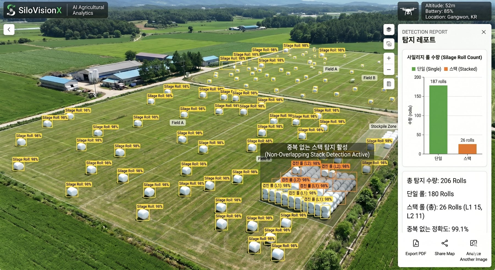

FLAGSHIP · AGRI-DRONE INTELLIGENCE
SiloVisionX
드론·모바일 사진 한 장으로 곤포 사일리지를 자동 탐지·계수하고, 증빙 보고서까지 만드는 AI 비전 시스템
실제 동작 화면 (약 6분) · 모바일 접속 → 현장 촬영 → 탐지·집계 → PDF 증빙 다운로드
AI FOR AGRICULTURE · SECURITY · DEVELOPMENT
서귀포 축산 현장의 곤포 사일리지 카운팅에서 검증한 드론·AI 객체 인식 기술.
같은 비전 엔진으로 몽골 초원의 양떼와 목초지를 읽습니다.
삼성전자 출신 · 연세대 정보시스템학 석사(정보보호 전공) AI·ODA 사이버보안·감리 자문
AI · 드론 · 농업 · 사이버보안 · 개도국 ODA

글로벌 ODA 레퍼런스 & 생태계
WHAT WE DO
농축산 AI 비전 솔루션 · 개도국 ODA 실무 · 사이버보안·거버넌스 자문을 한 팀이 이어서 수행합니다.
FLAGSHIP · AGRI-DRONE INTELLIGENCE
드론·모바일 사진 한 장으로 곤포 사일리지를 자동 탐지·계수하고, 증빙 보고서까지 만드는 AI 비전 시스템
실제 동작 화면 (약 6분) · 모바일 접속 → 현장 촬영 → 탐지·집계 → PDF 증빙 다운로드

DASHBOARD
다중 이미지 동시 처리 · 총 개수 자동 산출 · 4개 국어(한·영·중·일) 웹 UI
CYBERSECURITY & GOVERNANCE ADVISORY
AI·ODA 사업의 보안 요구사항 정의, ISMS-P·데이터 표준계약 실무, 감리 대응까지 — 기술을 도입하는 조직이 신뢰를 함께 확보하도록 설계합니다.
ODA EXTENSION · MONGOLIA
같은 비전 엔진으로 구역별 개체수와 방목 압력을 판독 — 순환 방목·초지 보전 의사결정의 근거를 만듭니다.
TRACK RECORD
01 — CORE SOLUTION
서귀포시 축산과에서 사일리지 보조금 지원과 시료 분석, 목초지 카운팅 실무를 하며 건당 30분씩 걸리는 수작업 계수와 중복·누락, 별도의 문서 작업을 직접 겪었습니다. 그 병목을 드론·스마트폰 촬영 한 장과 AI 객체 인식으로 바꾼 것이 SiloVisionX입니다.
곤포 사일리지를 사람이 일일이 세고 수기로 정리한 뒤 문서로 옮겨야 했습니다. 건당 약 30분, 중복 계수와 누락 위험.
YOLOv8m-seg 기반으로 촬영 이미지에서 곤포를 자동 탐지하고 개수를 집계합니다. 신뢰도 임계값은 현장에서 조정합니다.
위치·일시 메타데이터가 포함된 PDF 보고서가 자동 생성됩니다. 사진 한 장으로 30초 만에 증빙 완료.
mAP50 0.96
탐지 정확도 93~96%
YOLOv8m-seg 학습 결과
0.42초
이미지 1장 추론 속도
(CPU 기준)
30분 → 30초
증빙 보고서 1건 작성 시간
PDF 자동 생성
4개 국어
한·영·중·일 반응형 웹
PC·모바일 별도 앱 설치 없음


02 — ODA EXTENSION · MONGOLIA
국내에서 검증한 객체 인식·계수 엔진은 대상만 바꾸면 그대로 확장됩니다. 드론이 광활한 몽골 초원을 비행하며 ① 양떼(가축) 개체수를 자동으로 세고, ② 어느 구역이 과방목으로 뜯겼고 어느 구역에 풀이 남아 있는지를 한눈에 보여줍니다.
드론 항공 촬영 영상에서 가축 개체를 탐지해 구역별 개체수를 집계합니다. 국내 사일리지 카운팅에 쓴 동일한 객체 인식·계수 파이프라인을 적용합니다.
구역별 풀의 양을 비교해 과방목으로 뜯긴 구역과 아직 풀이 남은 구역을 구분합니다. 방목 압력이 몰리는 곳을 지도 위에서 바로 확인할 수 있습니다.
왜 ODA에 적합한가 — ① 눈으로 확인하기 어려운 넓은 초지를 드론으로 짧은 시간에 조사하고, ② 개체수·구역별 식생 같은 객관적 수치를 남겨 사업 성과 보고에 바로 쓸 수 있으며, ③ 스마트폰 브라우저에서 바로 동작해 현장 인력의 별도 장비·교육 부담이 적습니다.
WHY AICANSMILE
현장에서 겪은 문제, 개도국에서 끝까지 수행한 경험, 직접 만든 기술, 그리고 그 기술을 신뢰받게 하는 사이버보안 역량
현장을 아는 사람이 만든 도구는 현장에서 바로 쓰입니다.
제안서 작성부터 준공·운영 안정화까지, ODA 사업의 전 과정을 직접 수행했습니다.
기술을 만들고, 그 기술이 신뢰받도록 설계합니다.
R&D REFERENCES
농축산·음악·어학·금융·헬스케어 등 영역별로 직접 기획하고 구현한 AI 응용 서비스입니다. 탭을 눌러 각 솔루션의 기능과 기술 스택을 확인할 수 있습니다.
ADVISORY
AI를 도입하는 조직이 기술과 신뢰를 함께 확보하도록, 거버넌스 체계와 사이버보안을 처음부터 함께 설계합니다. 삼성전자 출신 · 연세대 정보시스템학 석사(정보보호 전공)와 ISMS-P·데이터 표준계약 실무 교육·과제 수행 경험을 바탕으로, AI·ODA 사업의 보안 요구사항 정의와 감리 대응까지 지원합니다.
ABOUT
AICANSMILE(아이캔스마일)은 AI·드론 비전 기술로 농축산 현장의 실제 문제를 풀고, 그 기술을 개발도상국 ODA로 확장하는 AI 기술 기업입니다. 국내에서 검증한 기술을 개도국의 문제에 그대로 옮겨 쓰는 것을 원칙으로 합니다.
만든 기술을 상용화하는 AI Studio, 개도국의 문제를 AI로 푸는 Impact Lab, 그리고 도입하는 AI가 신뢰받도록 돕는 AI Governance & Cybersecurity Advisory — 세 축이 서로의 실적과 신뢰를 떠받칩니다.
특히 삼성전자 출신 · 연세대학교 정보시스템학 석사(정보보호 전공) 이력과 ISMS-P·데이터 표준계약 실무 경험을 바탕으로, AI·ODA 사업에 필요한 사이버보안·개인정보·감리 자문을 기술 개발과 함께 제공합니다.
"AI can make the world smile."
가장 절실한 곳에 실용적인 AI를 제공하는 글로벌 임팩트 파트너가 되겠습니다.
"Borderless AI Partner"
농업·에듀테크·ODA의 경계를 넘어, 현장에서 작동하는 AI를 만듭니다.
CONTACT
과제 제안서 공동 작성, 실증(PoC), ODA 사업 컨소시엄까지 논의 가능합니다.
서울시 강서구 염창동
상세 주소는 문의 시 안내해드립니다
월-금: 09:00 - 18:00
토-일: 휴무
지하철: 9호선 염창역, 2·9호선 당산역
버스: 간선 660, 672, 지선 1002, 6631, 6642, 6712